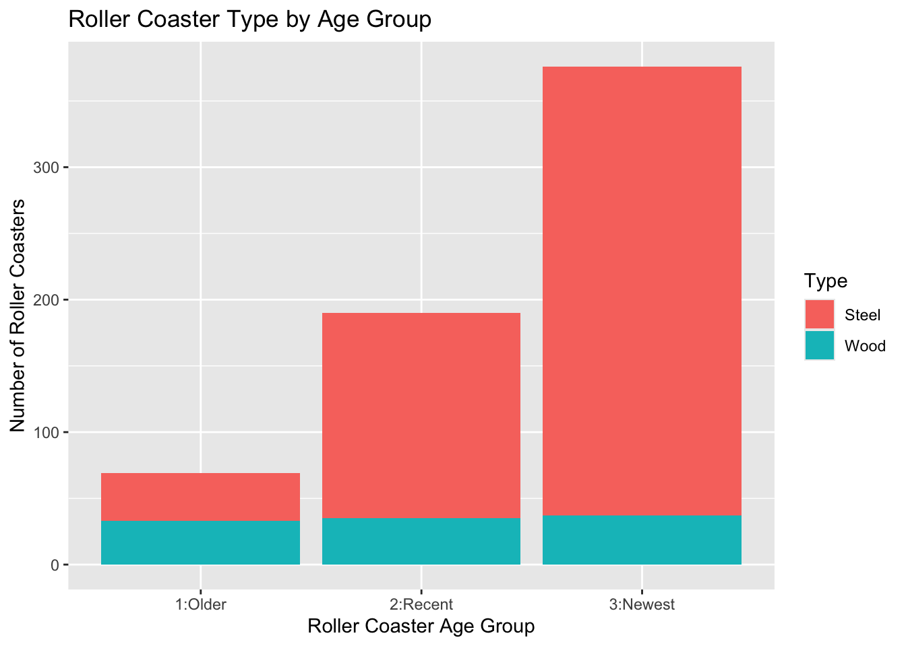
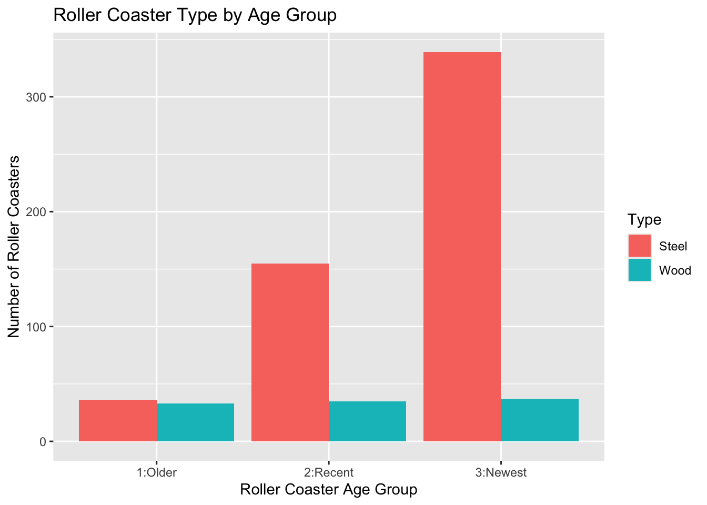

library(tidyverse)
library(httr)
library(jsonlite)Homework 5
Task 1 - Querying an API and a Tidy-Style Function
Question 1
Use GET() from the httr package to return information about a topic of interest that has been in the news lately. Store the result as an R object.
# use GET() to send a GET request to the news API
new_species <- GET("https://newsapi.org/v2/everything?q=Leopardus%20tilcayo&from=2026-9-18&language=en&pageSize=50&apiKey=ef59b58fce7542e0b4b17976d880650a")Question 2
Parse what is returned and find the data frame containing the article information.
# convert from raw data to text (`rawToChar()`)
# and parse the JSON text into an R object (`fromJSON()`)
parsed <- fromJSON(rawToChar(new_species$content))
# convert articles into a tibble
article_info <- as_tibble(parsed$articles)
# display names of variables
names(article_info)[1] "source" "author" "title" "description" "url"
[6] "urlToImage" "publishedAt" "content" # display relevant information
article_info |>
select(author, title, url)# A tibble: 28 × 3
author title url
<chr> <chr> <chr>
1 Allen Chang, MDCM First new feline species in 100 years dis… http…
2 <NA> New tiger cat species identified in Boliv… http…
3 Heba Habib New Bolivian cat claws its way into speci… http…
4 January Nelson Scientists Just Formally Named a Tiny New… http…
5 Blake Seidel, Blake Seidel New Wild Cat Species Discovered for the F… http…
6 Celeste Mello, Celeste Mello 'Everybody Say Pspsps to Tilcayo': 21 Cat… http…
7 Mason Stallings Cat Ladies Rejoice! New Feline Species Di… http…
8 <NA> New species of wild cat discovered for fi… http…
9 whyevolutionistrue New species of cat discovered! http…
10 Kieran Burke Bolivia: New cat species discovered by sc… http…
# ℹ 18 more rowsQuestion 3
Write a function that allows the user to query the API. The function should take:
- a title or subject to search for,
- a starting date,
- an API key.
Use the function twice to demonstrate that it works.
# create a function that queries the news API
query_news_API <- function(subject, start_date, your_API_key) {
# query news API
response <- GET("https://newsapi.org/v2/everything",
query = list(
q = subject,
from = start_date,
language = "en",
pageSize = 50,
apiKey = your_API_key
))
# no need to build URL because of `query = list(...)`
# convert & parse response
parsed <- fromJSON(rawToChar(response$content))
# convert articles to tibble
article_info <- as_tibble(parsed$articles)
return(article_info)
}
# first function use
species_news <- query_news_API(
subject = "Leopardus tilcayo",
start_date = "2026-09-18",
your_API_key = "ef59b58fce7542e0b4b17976d880650a"
)
species_news# A tibble: 28 × 8
source$id $name author title description url urlToImage publishedAt content
<chr> <chr> <chr> <chr> <chr> <chr> <chr> <chr> <chr>
1 <NA> Abcn… Allen… Firs… "The \"kit… http… https://i… 2026-09-18… "A new…
2 al-jazee… Al J… <NA> New … "Leopardus… http… https://w… 2026-09-18… "A tin…
3 al-jazee… Al J… Heba … New … "Purrfectl… http… https://w… 2026-09-18… "A new…
4 <NA> Thou… Janua… Scie… "For the f… http… https://t… 2026-09-18… "via R…
5 <NA> Chee… Blake… New … "Wake up f… http… https://i… 2026-09-18… "No, s…
6 <NA> Chee… Celes… 'Eve… "A new spe… http… https://i… 2026-09-19… "Pspsp…
7 <NA> The … Mason… Cat … "The disco… http… https://i… 2026-09-18… "The J…
8 cbs-news CBS … <NA> New … "Scientist… http… https://a… 2026-09-18… "Scien…
9 <NA> Whye… whyev… New … "According… http… https://w… 2026-09-18… "Accor…
10 <NA> DW (… Kiera… Boli… "Genetic d… http… https://s… 2026-09-18… "Scien…
# ℹ 18 more rows# second function use
ESA_news <- query_news_API(
subject = "Endangered Species Act Trump",
start_date = "2026-09-18",
your_API_key = "ef59b58fce7542e0b4b17976d880650a"
)
ESA_news# A tibble: 5 × 8
source$id $name author title description url urlToImage publishedAt content
<lgl> <chr> <chr> <chr> <chr> <chr> <chr> <chr> <chr>
1 NA Grist Sachi… The … "The Trump… http… https://g… 2026-09-18… "The E…
2 NA Natur… Iva G… Trum… "President… http… https://w… 2026-09-20… "Presi…
3 NA HuffP… HuffP… Kill… "A directi… http… https://i… 2026-09-18… "Trump…
4 NA Natio… Matth… Kill… "Killing e… http… https://w… 2026-09-18… "Killi…
5 NA Freer… Nextr… News… "Explosion… http… <NA> 2026-09-19… "Skip …Task 2 - Summarizing Roller Coaster Data
Read in the Data
coaster_data <- read_csv(
"https://www4.stat.ncsu.edu/online/datasets/635USrollercoasters.csv"
)Rows: 635 Columns: 21
── Column specification ────────────────────────────────────────────────────────
Delimiter: ","
chr (12): Coaster, Park, City, State, Census Region, AgeGroup, Scale, Type, ...
dbl (9): Year Opened, TopSpeed, MaxHeight, Drop, Length, Duration, # of Inv...
ℹ Use `spec()` to retrieve the full column specification for this data.
ℹ Specify the column types or set `show_col_types = FALSE` to quiet this message.head(coaster_data)# A tibble: 6 × 21
Coaster Park City State `Census Region` `Year Opened` AgeGroup TopSpeed
<chr> <chr> <chr> <chr> <chr> <dbl> <chr> <dbl>
1 Adrenaline … Oaks… Port… Oreg… West 2018 3:Newest 45
2 Adventure E… King… Mason Ohio Midwest 1991 2:Recent 35
3 Afterburn Caro… Char… Nort… South 1999 2:Recent 62
4 Aftershock Silv… Athol Idaho West 2008 3:Newest 65.6
5 Air Grover Busc… Tampa Flor… South 2010 3:Newest 22
6 Alpengeist Busc… Will… Virg… South 1997 2:Recent 67
# ℹ 13 more variables: MaxHeight <dbl>, Scale <chr>, Type <chr>, Design <chr>,
# Drop <dbl>, Length <dbl>, Duration <dbl>, `Inversions?` <chr>,
# `# of Inversions` <dbl>, Make <chr>, Latitude <dbl>, Longitude <dbl>,
# Boundary <chr>Question 4
Look at how the data is stored and determine whether everything makes sense. Convert variables to factors as needed.
# look at structure of data
str(coaster_data) # should `YearOpened` be chr instead of num? spc_tbl_ [635 × 21] (S3: spec_tbl_df/tbl_df/tbl/data.frame)
$ Coaster : chr [1:635] "Adrenaline Peak" "Adventure Express" "Afterburn" "Aftershock" ...
$ Park : chr [1:635] "Oaks Amusement Park" "Kings Island" "Carowinds" "Silverwood Theme Park" ...
$ City : chr [1:635] "Portland" "Mason" "Charlotte" "Athol" ...
$ State : chr [1:635] "Oregon" "Ohio" "North Carolina" "Idaho" ...
$ Census Region : chr [1:635] "West" "Midwest" "South" "West" ...
$ Year Opened : num [1:635] 2018 1991 1999 2008 2010 ...
$ AgeGroup : chr [1:635] "3:Newest" "2:Recent" "2:Recent" "3:Newest" ...
$ TopSpeed : num [1:635] 45 35 62 65.6 22 67 35 66 48 50 ...
$ MaxHeight : num [1:635] 72 63 113 192 25 ...
$ Scale : chr [1:635] "Extreme" "Thrill" "Extreme" "Extreme" ...
$ Type : chr [1:635] "Steel" "Steel" "Steel" "Steel" ...
$ Design : chr [1:635] "Sit Down" "Sit Down" "Inverted" "Inverted" ...
$ Drop : num [1:635] 70 47 110 177 22.5 170 20 147 80 144 ...
$ Length : num [1:635] 1050 2963 2956 1204 628 ...
$ Duration : num [1:635] 66 140 167 92 47 190 100 143 110 110 ...
$ Inversions? : chr [1:635] "Yes" "No" "Yes" "Yes" ...
$ # of Inversions: num [1:635] 3 0 6 3 0 6 0 0 0 4 ...
$ Make : chr [1:635] "Gerstlauer Amusement Rides GmbH" "Arrow Dynamics" "Bolliger & Mabillard" "Vekoma" ...
$ Latitude : num [1:635] 45.5 39.4 35.3 47.9 28 ...
$ Longitude : num [1:635] -122.7 -84.3 -80.8 -116.7 -82.6 ...
$ Boundary : chr [1:635] "{\"type\":\"Feature\",\"properties\":{\"CENSUSAREA\":95988.013,\"NAME\":\"Oregon\",\"GEO_ID\":\"0400000US41\",\"| __truncated__ "{\"type\":\"Feature\",\"properties\":{\"CENSUSAREA\":40860.694,\"NAME\":\"Ohio\",\"GEO_ID\":\"0400000US39\",\"L"| __truncated__ "{\"type\":\"Feature\",\"properties\":{\"CENSUSAREA\":48617.905,\"NAME\":\"North Carolina\",\"GEO_ID\":\"0400000"| __truncated__ "{\"type\":\"Feature\",\"properties\":{\"CENSUSAREA\":82643.117,\"NAME\":\"Idaho\",\"GEO_ID\":\"0400000US16\",\""| __truncated__ ...
- attr(*, "spec")=
.. cols(
.. Coaster = col_character(),
.. Park = col_character(),
.. City = col_character(),
.. State = col_character(),
.. `Census Region` = col_character(),
.. `Year Opened` = col_double(),
.. AgeGroup = col_character(),
.. TopSpeed = col_double(),
.. MaxHeight = col_double(),
.. Scale = col_character(),
.. Type = col_character(),
.. Design = col_character(),
.. Drop = col_double(),
.. Length = col_double(),
.. Duration = col_double(),
.. `Inversions?` = col_character(),
.. `# of Inversions` = col_double(),
.. Make = col_character(),
.. Latitude = col_double(),
.. Longitude = col_double(),
.. Boundary = col_character()
.. )
- attr(*, "problems")=<pointer: 0x14015af00> # turn applicable variables into factors (variables that represent categories)
coaster_data <- coaster_data |>
mutate(State = as.factor(State),
`Census Region` = as.factor(`Census Region`),
AgeGroup = as.factor(AgeGroup),
Scale = as.factor(Scale),
Type = as.factor(Type),
Design = as.factor(Design),
`Inversions?` = as.factor(`Inversions?`)
)
str(coaster_data)tibble [635 × 21] (S3: tbl_df/tbl/data.frame)
$ Coaster : chr [1:635] "Adrenaline Peak" "Adventure Express" "Afterburn" "Aftershock" ...
$ Park : chr [1:635] "Oaks Amusement Park" "Kings Island" "Carowinds" "Silverwood Theme Park" ...
$ City : chr [1:635] "Portland" "Mason" "Charlotte" "Athol" ...
$ State : Factor w/ 40 levels "Alabama","Arizona",..: 30 28 27 9 7 37 26 10 21 37 ...
$ Census Region : Factor w/ 4 levels "Midwest","Northeast",..: 4 1 3 4 3 3 2 1 1 3 ...
$ Year Opened : num [1:635] 2018 1991 1999 2008 2010 ...
$ AgeGroup : Factor w/ 3 levels "1:Older","2:Recent",..: 3 2 2 3 3 2 2 2 3 2 ...
$ TopSpeed : num [1:635] 45 35 62 65.6 22 67 35 66 48 50 ...
$ MaxHeight : num [1:635] 72 63 113 192 25 ...
$ Scale : Factor w/ 4 levels "Extreme","Family",..: 1 4 1 1 2 1 4 1 4 1 ...
$ Type : Factor w/ 2 levels "Steel","Wood": 1 1 1 1 1 1 1 2 2 1 ...
$ Design : Factor w/ 7 levels "Bobsled","Flying",..: 4 4 3 3 4 3 1 4 4 4 ...
$ Drop : num [1:635] 70 47 110 177 22.5 170 20 147 80 144 ...
$ Length : num [1:635] 1050 2963 2956 1204 628 ...
$ Duration : num [1:635] 66 140 167 92 47 190 100 143 110 110 ...
$ Inversions? : Factor w/ 2 levels "No","Yes": 2 1 2 2 1 2 1 1 1 2 ...
$ # of Inversions: num [1:635] 3 0 6 3 0 6 0 0 0 4 ...
$ Make : chr [1:635] "Gerstlauer Amusement Rides GmbH" "Arrow Dynamics" "Bolliger & Mabillard" "Vekoma" ...
$ Latitude : num [1:635] 45.5 39.4 35.3 47.9 28 ...
$ Longitude : num [1:635] -122.7 -84.3 -80.8 -116.7 -82.6 ...
$ Boundary : chr [1:635] "{\"type\":\"Feature\",\"properties\":{\"CENSUSAREA\":95988.013,\"NAME\":\"Oregon\",\"GEO_ID\":\"0400000US41\",\"| __truncated__ "{\"type\":\"Feature\",\"properties\":{\"CENSUSAREA\":40860.694,\"NAME\":\"Ohio\",\"GEO_ID\":\"0400000US39\",\"L"| __truncated__ "{\"type\":\"Feature\",\"properties\":{\"CENSUSAREA\":48617.905,\"NAME\":\"North Carolina\",\"GEO_ID\":\"0400000"| __truncated__ "{\"type\":\"Feature\",\"properties\":{\"CENSUSAREA\":82643.117,\"NAME\":\"Idaho\",\"GEO_ID\":\"0400000US16\",\""| __truncated__ ...Question 5
Document any missing values in the data.
# check for missing values using `is.na()`
colSums(is.na(coaster_data)) Coaster Park City State Census Region
0 0 0 0 0
Year Opened AgeGroup TopSpeed MaxHeight Scale
0 0 74 8 0
Type Design Drop Length Duration
0 0 128 33 66
Inversions? # of Inversions Make Latitude Longitude
0 0 36 0 0
Boundary
0 TopSpeed, MaxHeight, Drop, Length, Duration, and Make have missing values
Categorical Variables
Question 6
Create:
- a one-way contingency table,
- a two-way contingency table,
- a three-way contingency table.
Use table() and interpret one value from each resulting table.
One-Way Table
# create a one-way contingency table
table(coaster_data$State)
Alabama Arizona Arkansas California Colorado
6 2 6 75 12
Connecticut Florida Georgia Idaho Illinois
5 48 25 6 21
Indiana Iowa Kansas Kentucky Louisiana
12 8 1 11 3
Maine Maryland Massachusetts Michigan Minnesota
5 22 14 11 11
Missouri Nevada New Hampshire New Jersey New Mexico
26 5 6 37 5
New York North Carolina Ohio Oklahoma Oregon
38 15 35 8 3
Pennsylvania South Carolina South Dakota Tennessee Texas
51 4 1 13 38
Utah Virginia Washington West Virginia Wisconsin
10 21 4 3 8 Interpretation: There are 15 roller coasters from North Carolina in this dataset.
Two-Way Table
# create a two-way contingency table
table(coaster_data$State, coaster_data$Type)
Steel Wood
Alabama 5 1
Arizona 2 0
Arkansas 5 1
California 69 6
Colorado 10 2
Connecticut 3 2
Florida 45 3
Georgia 22 3
Idaho 4 2
Illinois 17 4
Indiana 6 6
Iowa 4 4
Kansas 1 0
Kentucky 8 3
Louisiana 3 0
Maine 4 1
Maryland 20 2
Massachusetts 13 1
Michigan 10 1
Minnesota 9 2
Missouri 20 6
Nevada 5 0
New Hampshire 5 1
New Jersey 35 2
New Mexico 4 1
New York 32 6
North Carolina 14 1
Ohio 28 7
Oklahoma 7 1
Oregon 3 0
Pennsylvania 34 17
South Carolina 3 1
South Dakota 1 0
Tennessee 11 2
Texas 34 4
Utah 9 1
Virginia 18 3
Washington 2 2
West Virginia 1 2
Wisconsin 4 4Interpretation: Of the 15 roller coasters from NC, 14 are Steel and only one is Wood.
Three-Way Table
# create a three-way contingency table
table(coaster_data$State, coaster_data$Scale, coaster_data$Type), , = Steel
Extreme Family Kiddie Thrill
Alabama 1 3 0 1
Arizona 1 1 0 0
Arkansas 2 2 0 1
California 30 18 4 17
Colorado 3 3 1 3
Connecticut 1 0 2 0
Florida 14 17 1 13
Georgia 10 6 0 6
Idaho 2 2 0 0
Illinois 7 6 1 3
Indiana 2 2 1 1
Iowa 1 1 1 1
Kansas 0 1 0 0
Kentucky 3 4 0 1
Louisiana 1 1 0 1
Maine 1 2 0 1
Maryland 8 6 2 4
Massachusetts 7 4 0 2
Michigan 3 4 1 2
Minnesota 4 1 0 4
Missouri 10 5 0 5
Nevada 4 0 1 0
New Hampshire 2 2 1 0
New Jersey 14 13 0 8
New Mexico 0 2 0 2
New York 10 13 0 9
North Carolina 8 2 2 2
Ohio 15 3 3 7
Oklahoma 2 5 0 0
Oregon 1 1 0 1
Pennsylvania 15 9 3 7
South Carolina 0 2 0 1
South Dakota 0 1 0 0
Tennessee 3 7 0 1
Texas 16 5 1 12
Utah 3 2 1 3
Virginia 11 4 0 3
Washington 1 0 0 1
West Virginia 0 1 0 0
Wisconsin 0 2 1 1
, , = Wood
Extreme Family Kiddie Thrill
Alabama 1 0 0 0
Arizona 0 0 0 0
Arkansas 1 0 0 0
California 4 0 0 2
Colorado 1 0 0 1
Connecticut 1 0 0 1
Florida 1 1 0 1
Georgia 2 0 0 1
Idaho 2 0 0 0
Illinois 3 1 0 0
Indiana 3 0 0 3
Iowa 0 1 0 3
Kansas 0 0 0 0
Kentucky 0 1 0 2
Louisiana 0 0 0 0
Maine 1 0 0 0
Maryland 2 0 0 0
Massachusetts 0 0 0 1
Michigan 1 0 0 0
Minnesota 2 0 0 0
Missouri 5 0 0 1
Nevada 0 0 0 0
New Hampshire 0 0 0 1
New Jersey 2 0 0 0
New Mexico 0 0 0 1
New York 2 2 1 1
North Carolina 1 0 0 0
Ohio 3 2 0 2
Oklahoma 0 0 0 1
Oregon 0 0 0 0
Pennsylvania 6 4 0 7
South Carolina 0 0 0 1
South Dakota 0 0 0 0
Tennessee 2 0 0 0
Texas 1 0 0 3
Utah 1 0 0 0
Virginia 2 0 0 1
Washington 1 0 0 1
West Virginia 0 1 0 1
Wisconsin 2 2 0 0Interpretation: Surprisingly, the one wooden roller coaster in NC is classified as an Extreme roller coaster (I don’t think I would trust going on it). The rest of the coasters are Steel, with 8 coasters classified as Extreme, 2coasters as Family, 2 classified as Kiddie, and 2 classified as Thrill.
Question 7
Create a conditional two-way table using two different methods.
Method 1 - Subset the Data First
# check how State values are coded
unique(coaster_data$State) [1] Oregon Ohio North Carolina Idaho Florida
[6] Virginia New York Illinois Missouri California
[11] Arkansas Maryland Utah Massachusetts Georgia
[16] New Jersey Texas Nevada West Virginia Pennsylvania
[21] Colorado Tennessee Connecticut New Hampshire Alabama
[26] Washington Michigan Minnesota Indiana Wisconsin
[31] Arizona Oklahoma Kansas Maine New Mexico
[36] Iowa Louisiana South Dakota Kentucky South Carolina
40 Levels: Alabama Arizona Arkansas California Colorado Connecticut ... Wisconsin# use `filter()` to subset the data to roller coasters only in North Carolina
NC_coasters <- coaster_data |>
filter(State == "North Carolina")
# check
NC_coasters# A tibble: 15 × 21
Coaster Park City State `Census Region` `Year Opened` AgeGroup TopSpeed
<chr> <chr> <chr> <fct> <fct> <dbl> <fct> <dbl>
1 Afterburn Caro… Char… Nort… South 1999 2:Recent 62
2 Carolina C… Caro… Char… Nort… South 1980 2:Recent 41
3 Carolina G… Caro… Char… Nort… South 1973 1:Older 30
4 Copperhead… Caro… Char… Nort… South 2019 3:Newest 50
5 Dinosaur C… Dead… Will… Nort… South 2008 3:Newest NA
6 Flying Cob… Caro… Char… Nort… South 2009 3:Newest 47
7 Fury 325 Caro… Char… Nort… South 2015 3:Newest 95
8 Hurler Caro… Char… Nort… South 1994 2:Recent 50
9 Intimidator Caro… Char… Nort… South 2010 3:Newest 75
10 Kiddy Hawk Caro… Char… Nort… South 2003 3:Newest 26
11 Miner Mike Funt… Pine… Nort… South 2018 3:Newest 8
12 Nighthawk Caro… Char… Nort… South 2004 3:Newest 51
13 Ricochet Caro… Char… Nort… South 2002 3:Newest 28
14 Vortex Caro… Char… Nort… South 1992 2:Recent 50
15 Wilderness… Caro… Char… Nort… South 1998 2:Recent 16
# ℹ 13 more variables: MaxHeight <dbl>, Scale <fct>, Type <fct>, Design <fct>,
# Drop <dbl>, Length <dbl>, Duration <dbl>, `Inversions?` <fct>,
# `# of Inversions` <dbl>, Make <chr>, Latitude <dbl>, Longitude <dbl>,
# Boundary <chr># create a two-way conditional table comparing coaster type and age group
table(NC_coasters$Type, NC_coasters$AgeGroup)
1:Older 2:Recent 3:Newest
Steel 1 4 9
Wood 0 1 0- The 1 Wood roller coaster in NC is classified as Recent, so maybe I trust it. But how recent?
# check the opening year of the wooden coaster in NC
NC_coasters |>
filter(Type == "Wood") |>
select(Coaster, Park, `Year Opened`, AgeGroup)# A tibble: 1 × 4
Coaster Park `Year Opened` AgeGroup
<chr> <chr> <dbl> <fct>
1 Hurler Carowinds 1994 2:RecentThe 1 Wood roller coaster, called the Hurler, was opened in 1994 at Carowinds. I think I would rather ride a newer wooden roller coaster, if I rode a wooden roller coaster at all.
Haha, got a little sidetracked here!
Method 2 - Subset a Three-Way Table
# create a three-way contigency table
NC_coasters2 <- table(
coaster_data$Type,
coaster_data$AgeGroup,
coaster_data$State
)
# condition is on State
NC_coasters2[, , "North Carolina"]
1:Older 2:Recent 3:Newest
Steel 1 4 9
Wood 0 1 0Question 8
Create a two-way contingency table using group_by() and summarize(). Then use pivot_wider() so that the result resembles the output from table().
# create the same two-way contingency table as before
# but by using `group_by()` and `summarize()`
coaster_data |>
group_by(State, Type) |>
summarize(count = n())`summarise()` has regrouped the output.
ℹ Summaries were computed grouped by State and Type.
ℹ Output is grouped by State.
ℹ Use `summarise(.groups = "drop_last")` to silence this message.
ℹ Use `summarise(.by = c(State, Type))` for per-operation grouping
(`?dplyr::dplyr_by`) instead.# A tibble: 74 × 3
# Groups: State [40]
State Type count
<fct> <fct> <int>
1 Alabama Steel 5
2 Alabama Wood 1
3 Arizona Steel 2
4 Arkansas Steel 5
5 Arkansas Wood 1
6 California Steel 69
7 California Wood 6
8 Colorado Steel 10
9 Colorado Wood 2
10 Connecticut Steel 3
# ℹ 64 more rows# use `pivot_wider()` so result resembles the output from `table()`
coaster_data |>
group_by(State, Type) |>
summarize(count = n()) |>
pivot_wider(names_from = Type,
values_from = count)`summarise()` has regrouped the output.
ℹ Summaries were computed grouped by State and Type.
ℹ Output is grouped by State.
ℹ Use `summarise(.groups = "drop_last")` to silence this message.
ℹ Use `summarise(.by = c(State, Type))` for per-operation grouping
(`?dplyr::dplyr_by`) instead.# A tibble: 40 × 3
# Groups: State [40]
State Steel Wood
<fct> <int> <int>
1 Alabama 5 1
2 Arizona 2 NA
3 Arkansas 5 1
4 California 69 6
5 Colorado 10 2
6 Connecticut 3 2
7 Florida 45 3
8 Georgia 22 3
9 Idaho 4 2
10 Illinois 17 4
# ℹ 30 more rowsQuestion 9
Create both a stacked bar graph and a side-by-side bar graph. Include appropriate axis labels and titles.
Stacked Bar Graph
library(ggplot2)
help(ggplot) # to see syntax; usually would do in console (or can look at cheat sheet)
# create a simple stacked bar graph
ggplot(
data = coaster_data,
aes(x = AgeGroup, fill = Type)
) +
geom_bar() +
labs(
x = "Roller Coaster Age Group",
y = "Number of Roller Coasters",
title = "Roller Coaster Type by Age Group")
Side-by-Side Bar Graph
# create a simple side-by-side bar graph
# use `geom_bar(position = "dodge")` (from help(geom_bar))
ggplot(
data = coaster_data,
aes(x = AgeGroup, fill = Type)
) +
geom_bar(position = "dodge") +
labs(
x = "Roller Coaster Age Group",
y = "Number of Roller Coasters",
title = "Roller Coaster Type by Age Group")